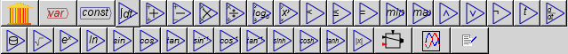
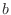
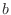

Next: Design Canvas Up: Components of the Program Previous: Wiring and Equations Tabs

These are the “nuts and bolts” of any system dynamics program. The number of icons will grow over time, but the key ones are implemented now:
 . This is the
fundamental element of Minsky that is not found (yet) in any other
system dynamics program.
. This is the
fundamental element of Minsky that is not found (yet) in any other
system dynamics program.
Clicking on it and placing the resulting Bank Icon on the Canvas enters a Godley table into your model:

Double-click on the Bank Icon (or right-click and choose “Open Godley Table” from the context menu) and you get a double-entry bookkeeping table we call a Godley Table, which looks like the following onscreen:
Use this table to enter the bank accounts and financial flows in your model. We discuss this later in the Tutorial (Monetary).
The only essential step here is providing a name for the Variable. You can also enter a value for it (and a rotation in degrees), but these can be omitted. In a dynamic model, the value will be generated by the model itself, provided its input is wired.
When you click on OK (or press Enter), the newly named variable will appear in the top left hand corner of the Canvas. Move the mouse cursor to where you want to place the variable on the Canvas, click, and it will be placed in that location.
 creates an entity whose
value is unaffected by the simulation or other entities in the
model. Click on it and a constant definition window will appear:
creates an entity whose
value is unaffected by the simulation or other entities in the
model. Click on it and a constant definition window will appear:
The only essential element here is its value. You can also specify its rotation on the Canvas in degrees. This lets you vary a parameter while a simulation is running—which is useful if you wish to explore a range of policy options while a model is running.
A constant is just a type of variable, which also include parameters (named constants), flow variables, stock variables and integration variables. In fact there is no real conceptual difference between creating a constant or creating a variable, as you can switch the type using the type field.
For example, by default a graph displays the simulation time on the horizontal axis, so that cycles get compressed as a simulation runs for a substantial period:
If a Time block is added to the marker for the x-axis range, you can control the number of years that are displayed. This graph is set up to show a ten year range of the model only:

“int1” is just a placeholder for the integration variable, and the first thing you should do after creating one is give it a name. Double-click on the “int1”, or right click and choose Edit. This will bring up the following menu:

Change the name to something appropriate, and give it an initial value. For example, if you were building a model that included America's population, you would enter the following:
The integrated variable block would now look like this:

To model population, you need to include a growth rate. According to Wikipedia, the current US population growth rate is 0.97 percent per annum. Expressed as an equation, this says that the annual change in population, divided by its current level, equals 0.0097:

To express this as an integral equation, firstly we multiply both sides of this equation by Population to get:

Then we integrate both sides to get an equation that estimates what the population will be T years into the future as:
Here, 315 (million) equals the current population of the USA, the year
zero is today, and  is some number of years from today. The same
equation done as a block diagram looks like this:
is some number of years from today. The same
equation done as a block diagram looks like this:
Or you can make it look more like the mathematical equation by right-clicking on “Population” and choosing “Copy Var”. Then you will get another copy of the Population variable, and you can wire up the equation this way:

Either method can be used. I prefer the latter because it's neater, and it emphasizes the link between the simple formula for a percentage rate of change and a differential equation.
 and
and  labels on the ports. In the
case of logarithm, the bottom port (labelled ) is the base of the
logarithm.
labels on the ports. In the
case of logarithm, the bottom port (labelled ) is the base of the
logarithm.

 , =,
, =, 

 (and,
or, not)
(and,
or, not) . These return 0 for false and 1 for true.
. These return 0 for false and 1 for true.
 A data
block interpolates a sequence of empirical values, which may
be generated outside of Minsky, and imported as a CSV file. This
effectively defines a piecewise linear function.
A data
block interpolates a sequence of empirical values, which may
be generated outside of Minsky, and imported as a CSV file. This
effectively defines a piecewise linear function.
 Add plots to the canvas.
Add plots to the canvas.
 Add a piecewise-defined function block
to the canvas. Also known as a hybrid function.
Add a piecewise-defined function block
to the canvas. Also known as a hybrid function.